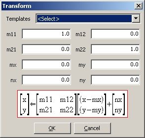

Transform dialog
Transform dialog is a legacy feature that was brought along from ASSDraw2 just for the heck of it. In those days of ASSDraw2 where there was no Scale/Rotate mode, this dialog was the only way you could rescale or rotate the shape. Now that ASSDraw3 has that new mode, plus Bilinear Transformation mode, Transform dialog became obsolete since you need to know the math in order to use it. That said, this page explains the math behind the Transform dialog.
First, the Transform dialog can be accessed through menu Canvas > Tranform. Here is how the dialog looks like:

If you are familiar with 2x2 transformation matrix then the formula diagram in the dialog should be self-explanatory. If not, then read further. Notice that the formula is broken up into two parts separated by the (left) arrow. The direction of the arrow denotes that whatever the right-hand side of the formula simplifies into, the values would be assigned to the x and y coordinates of the points. Now look at the x and y in the right-hand side. First, they are substracted by mx and my respectively. Then they are multiplied using matrix multiplication against [m11 m12; m21 m22]. This translate into:
top = m11(x - mx) + m12(y - my)
bottom = m21(x - mx) + m22(y - my)
Finally nx and ny respectively are to these values:
top = m11(x - mx) + m12(y - my) + nx
bottom = m21(x - mx) + m22(y - my) + ny
The new x gets the top value and the new y gets the bottom value.
Now the questions are, why such a weird formula?, and how is it useful?
First, let's try m11 = m22 = 1, m12 = m21 = mx = my = nx = ny = 0. The result:
(new) x = x
(new) y = y
We get exactly the same coordinates! This is because the matrix with m11 = m22 = 1 and m12 = m21 = 0 is called identity matrix and whatever matrix multiplies the identity matrix will return the same matrix.
Now let's try m11 = m22 = 2, m12 = m21 = 0:
(new) x = 2x
(new) y = 2y
Now the coordinates are doubled!
With this transformation, the shape will be twice larger than before. Changing m11 and m22 with any other value N will grow the shape N times since if a point was at (1,1), it is now at (N,N). Notice though that a point at (0,0) is still at (0,0). This means that the shape grows centering at (0,0). Sometimes you want the shape to grow centering at a different coordinate, say (S,T). To do this, first you must move all the points so that the point that is at (S,T) relocates to (0,0). Then you scale the shape up. Finally you move the point that was originally at (S,T) back to, well, (S,T). Now how do we translate that to the values in the Transform dialog? Recall, first: move (S,T) to (0,0); second: scale it up; third: move (0,0) back to (S,T). How about this:
new x = N(x - S) + S
new y = N(y - T) + T
See how it fits into:
new x = N(x - mx) + 0(y - my) + nx
new y = 0(x - mx) + N(y - my) + ny
Well, if you haven't realized: mx = nx = S; my = ny = T.
Now that was all rescaling. To rotate the shape, suppose you want to rotate it by theta:
m11 = cos theta
m12 = sin theta
m21 = -sin theta
m22 = cos theta
After all those explanations, it is so much simpler if you use the Scale/Rotate mode :P
This help file has been generated by the freeware version of HelpNDoc